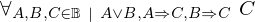
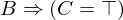

Show the Proof¶
In [1]:
import proveit
# Automation is not needed when only showing a stored proof:
proveit.defaults.automation = False # This will speed things up.
proveit.defaults.inline_pngs = False # Makes files smaller.
%show_proof
Out[1]:
| step type | requirements | statement | ||
|---|---|---|---|---|
| 0 | instantiation | 1, 2, 3, 4, 5, 6, 7 |  , ,  , ,  , ,  , ,  ⊢ ⊢ | |
 : , : ,  : , : ,  : : | ||||
| 1 | theorem | ⊢  | ||
| proveit.logic.booleans.disjunction.singular_constructive_dilemma_lemma | ||||
| 2 | assumption | ⊢ | ||
| 3 | assumption | ⊢ | ||
| 4 | instantiation | 8 | ⊢ | |
 : , : ,  : :  | ||||
| 5 | assumption | ⊢ | ||
| 6 | deduction | 9 | ⊢ | |
| 7 | deduction | 10 | ⊢  | |
| 8 | axiom | ⊢  | ||
| proveit.logic.equality.equality_in_bool | ||||
| 9 | instantiation | 12, 11 | , ⊢ | |
| : | ||||
| 10 | instantiation | 12, 13 | , ⊢ | |
| : | ||||
| 11 | modus ponens | 14, 15 | , ⊢ | |
| 12 | axiom | ⊢  | ||
| proveit.logic.booleans.eq_true_intro | ||||
| 13 | modus ponens | 16, 17 | , ⊢ | |
| 14 | assumption | ⊢ | ||
| 15 | assumption | ⊢ | ||
| 16 | assumption | ⊢ | ||
| 17 | assumption | ⊢ | ||